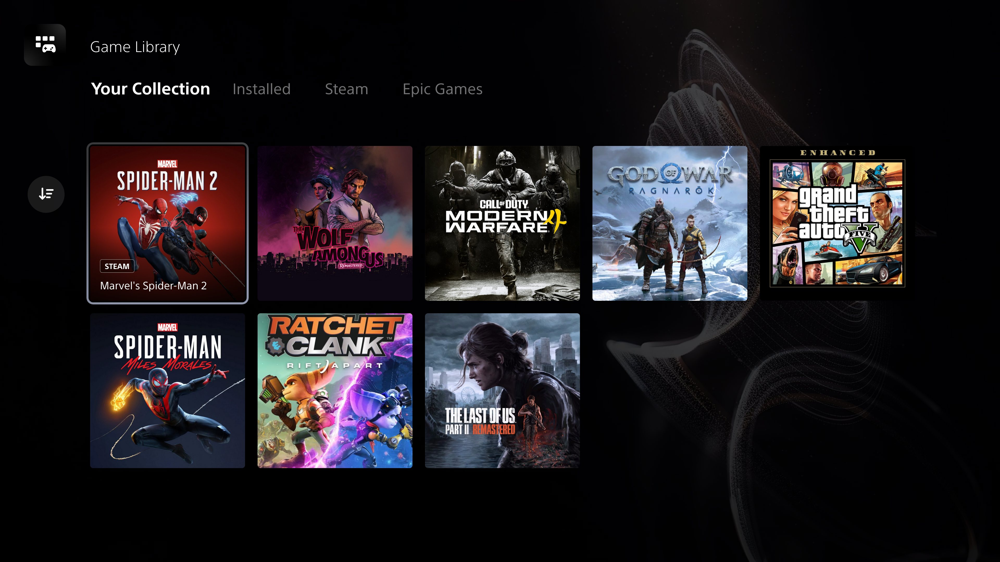
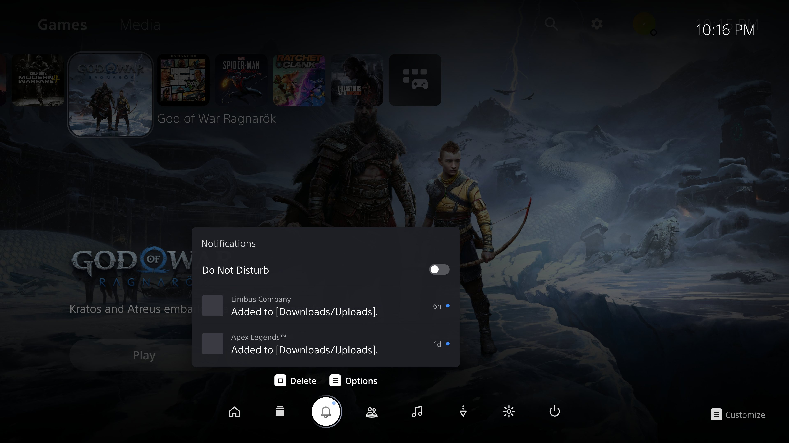

Game Launcher
All your PC games in one console-style home. Made for the big screen and your controller.
Works with Steam, Epic Games and any game on your PC.
Your whole library. One place to play.
Game Launcher finds the games you already have and puts them on one simple Home. They still start through Steam and Epic, so your saves and friends stay where they are.
Every launcher
Steam on every drive, your Epic Games library and any game folder you add.
Built for a controller
Move with the D-pad, play with one button. Keyboard and mouse work too.
Trophies and progress
See your achievements and how far you are in every story game.
Pick up right where you left off.
Story games open on your progress: what you were doing, how far you are and the trophies you've earned. One button and you're back in.
More about game pages
Every game, one grid.
Your collection, what's installed, and your Steam and Epic Games libraries, each a tab away.
More about the libraryOne button, over any game.
Press the Home button on your controller while you play to switch games, read notifications, see friends you played with or change the music.
More about the overlay
Make your PC feel like a console.
Free for Windows 10 and 11. Works with Steam, Epic Games and any game on your PC.
Download Game Launcher